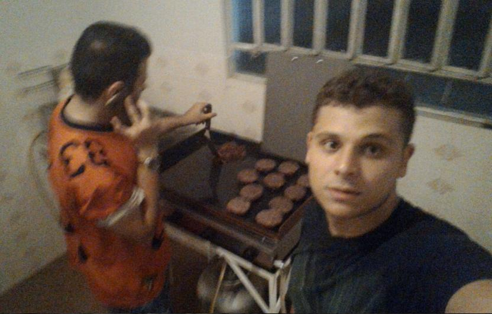
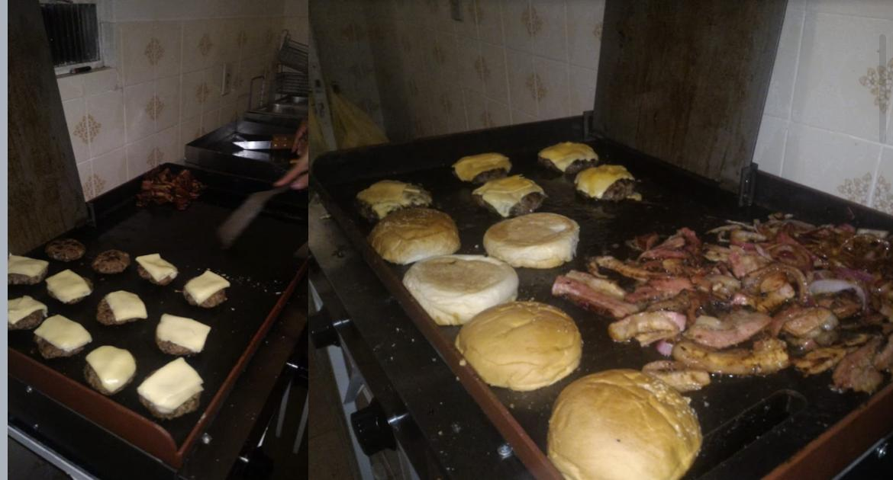

HISTÓRIA
HISTÓRIA DO HAMBURGUER
O hambúrguer tem raízes antigas, mas sua forma moderna surgiu nos Estados Unidos no final do século XIX. Originado da ideia do "Hamburg Steak" trazida por imigrantes alemães, o hambúrguer começou a ser servido entre duas fatias de pão. Com o boom das cadeias de fast-food no século XX, o hambúrguer tornou-se uma refeição rápida e acessível, ganhando popularidade global. Hoje, é um ícone culinário com inúmeras variações, unindo pessoas ao redor do mundo.
HISTÓRIA DO MEDIEVAL BURGUER
Num alvorecer empreendedor, três casais de amigos uniram seus sonhos e esperanças, tecendo os fios de uma visão compartilhada. Com corações unidos e economias entrelaçadas, dedicaram cinco meses de trabalho árduo para dar vida a um projeto que floresceria em 10 de Fevereiro de 2017. Movidos pelo apoio e colaboração de muitos que compartilharam seus sonhos, ergueram juntos o estandarte da inovação e excelência. Seu objetivo era claro: romper com o comum, surpreendendo sempre com produtos de qualidade, serviços excepcionais e um atendimento único. Assim, sob o céu estrelado da jornada empreendedora, nasceu o MEDIEVAL BURGUER, uma jóia lapidada com amor, paixão e o desejo de encantar paladares e corações.
 